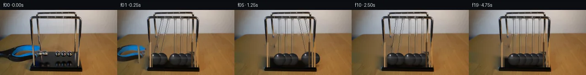

![首帧]()

Round 00
2026-11-05T01:22:47.148786+00:00像素候选变化代码 +346/−0inspection 更新
pixels b42a68ff2d6f7e62 · code fafd9e4a883cc083
查看本轮 generate.py 真实 diff
--- previous/generate.py +++ current/generate.py @@ -0,0 +1,346 @@ +#!/usr/bin/env python3 +"""Generate a 20-frame, source-locked Newton's-cradle continuation. + +All scene understanding is based on numeric RGB inspection. Frame zero is copied +verbatim. Later frames use a locally inpainted clean plate, analytic pendulum motion, +procedurally shaded metal balls, and a masked copy of source pixels for the retracting +blue grabber. +""" + +from pathlib import Path +import math + +import cv2 +import numpy as np +from PIL import Image, ImageDraw + +import artifact_io + + +ROOT = Path(__file__).resolve().parent +W, H = 256, 144 + + +def smoothstep(x: float) -> float: + x = float(np.clip(x, 0.0, 1.0)) + return x * x * (3.0 - 2.0 * x) + + +def alpha_over(dst: np.ndarray, src: np.ndarray, alpha: np.ndarray) -> np.ndarray: + """Composite RGB uint8 src over dst with a float alpha field.""" + a = np.clip(alpha, 0.0, 1.0)[..., None] + return np.clip(dst.astype(np.float32) * (1.0 - a) + src.astype(np.float32) * a, + 0, 255).astype(np.uint8) + + +def translated_layer(rgb: np.ndarray, alpha: np.ndarray, dx: float, dy: float): + matrix = np.float32([[1.0, 0.0, dx], [0.0, 1.0, dy]]) + moved_rgb = cv2.warpAffine(rgb, matrix, (W, H), flags=cv2.INTER_LINEAR, + borderMode=cv2.BORDER_REPLICATE) + moved_alpha = cv2.warpAffine(alpha.astype(np.float32), matrix, (W, H), + flags=cv2.INTER_LINEAR, + borderMode=cv2.BORDER_CONSTANT, borderValue=0) + return moved_rgb, moved_alpha + + +def build_tool_alpha(source: np.ndarray) -> np.ndarray: + """Numerically isolate the blue-black grabber without including the balls.""" + yy, xx = np.mgrid[:H, :W] + r, g, b = (source[..., i].astype(np.float32) for i in range(3)) + blue = (b > 52) & (b > r * 1.23) & (b > g * 1.08) + + # The handle is blue with black rubber/shadowed regions contiguous on its left. + dark_handle = (np.maximum.reduce([r, g, b]) < 92) & (xx < 73) & \ + (yy >= 77) & (yy <= 116) + seed = (blue & (xx < 91) & (yy >= 74) & (yy <= 116)) | dark_handle + seed = seed.astype(np.uint8) * 255 + kernel = cv2.getStructuringElement(cv2.MORPH_ELLIPSE, (7, 7)) + mask = cv2.morphologyEx(seed, cv2.MORPH_CLOSE, kernel, iterations=2) + mask = cv2.dilate(mask, np.ones((3, 3), np.uint8), iterations=1) + + # Keep only the plausible hand-tool silhouette and feather the photographed edge. + polygon = np.zeros((H, W), np.uint8) + cv2.fillPoly(polygon, [np.array([ + (0, 76), (58, 76), (78, 80), (96, 91), (101, 104), + (91, 116), (66, 121), (34, 116), (0, 105) + ], np.int32)], 255) + mask = cv2.bitwise_and(mask, polygon) + alpha = cv2.GaussianBlur(mask.astype(np.float32) / 255.0, (5, 5), 0.9) + return alpha + + +def build_clean_plate(source: np.ndarray) -> np.ndarray: + """Remove only moving objects/cords using local RGB inpainting.""" + mask = np.zeros((H, W), np.uint8) + + # Grabber and its dark occlusion/shadow. + cv2.fillPoly(mask, [np.array([ + (0, 75), (61, 75), (82, 80), (105, 91), (110, 107), + (101, 123), (72, 129), (35, 121), (0, 108) + ], np.int32)], 255) + + # All five source-ball locations and contact shadows. + cv2.ellipse(mask, (124, 109), (51, 21), 0, 0, 360, 255, -1) + + # The two displaced cords and the three approximately vertical cords. + for a, c in zip([98, 112], [78, 92]): + cv2.line(mask, (a, 18), (c, 99), 255, 4, cv2.LINE_AA) … diff truncated; 259 more lines …